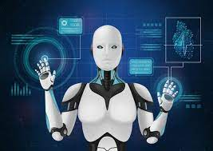
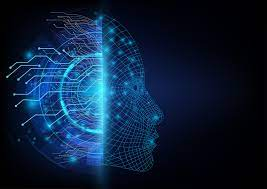
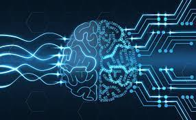

O que é Inteligência Artificial e como ela funciona?
Uma solução de IA envolve um agrupamento de várias tecnologias, como redes neurais artificiais, algoritmos, sistemas de aprendizado, entre outros que conseguem simular capacidades humanas ligadas à inteligência. Por exemplo, o raciocínio, a percepção de ambiente e a habilidade de análise para a tomada de decisão.
Podemos dizer que o conceito de IA está relacionado à capacidade de soluções tecnológicas realizarem atividades de um modo considerado inteligente. IAs também podem “aprender por si mesmas” graças a sistemas de aprendizado que analisam grandes volumes de dados, possibilitando a elas ampliarem seus conhecimentos.
A Inteligência Artificial (IA) também é um campo da ciência, cujo propósito é estudar, desenvolver e empregar máquinas para realizarem atividades humanas de maneira autônoma. Também está ligada à robótica, ao Machine Learning (Aprendizagem de Máquina), ao reconhecimento de voz e de visão, entre outras tecnologias.
Como surgiu a Inteligência Artificial?
A concepção de algo artificial que simula a inteligência humana, ou algo próximo a isso, tem sido motivo de discussão há muito tempo na história da humanidade. Já a conceituação moderna disso remota a meados da década de 1920.
Se, em 1943, Warren McCulloch e Walter Pitts publicaram um artigo referenciando redes neurais, a indústria cinematográfica já tinha lançado, em 1927, o filme Metrópolis, em que aparecia uma androide.
Antes disso, em 1921, o escritor tcheco Karel Čapek produziu uma peça de teatro intitulada R.U.R. (iniciais de Rosumovi Univerzální Roboti). No Brasil, foi publicada como “Fábrica de Robôs”. Ela deu origem ao termo “robô” e apresentou a ideia de seres humanoides artificiais, dotados de certa inteligência, embora se parecessem mais a clones. Contudo, o termo robô se popularizou e hoje é usado mais na área tecnológica. Em resumo, podemos dizer que arte e ciência buscaram abordar o conceito há muito tempo.


